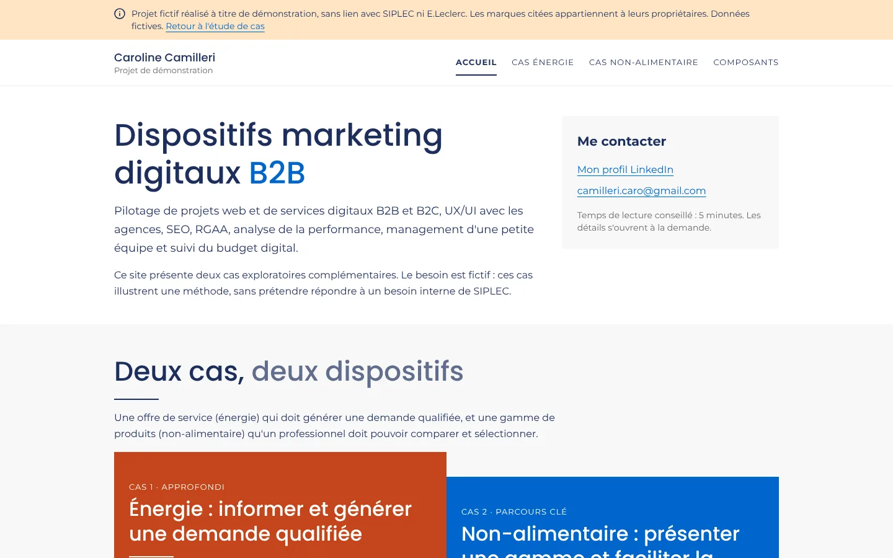
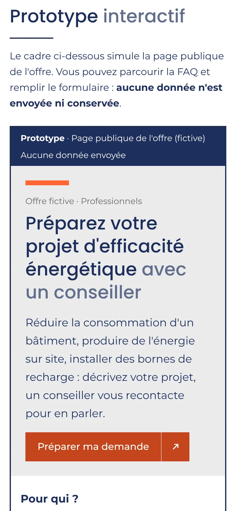

Offre énergie B2B et showroom professionnel
Deux offres B2B, deux parcours en ligne : une demande de rendez-vous qualifiée pour un service, une sélection de produits pour des acheteurs.
- Livrable
- Un site de 4 pages : accueil, cas énergie, cas non alimentaire, bibliothèque de composants
- Réalisé avec
- Claude Code, à partir d'un design system que j'ai préparé
- Durée
- [À COMPLÉTER PAR CAROLINE]
1Le contexte
Je me suis posé une question : comment présenter en ligne deux offres B2B de nature différente ? D'un côté, un service (un accompagnement en efficacité énergétique) qui doit générer des demandes exploitables. De l'autre, une gamme de produits qu'un professionnel doit pouvoir comparer.
C'est une hypothèse de travail, pas une commande. Les offres, les produits et les données sont fictifs.
Les deux sujets choisis
- Énergie : un accompagnement pour réduire la consommation d'un bâtiment, produire de l'énergie sur site ou installer des bornes de recharge. L'objectif est de transformer une visite en demande qu'un conseiller peut traiter.
- Non alimentaire : une gamme printemps d'équipement extérieur de six produits fictifs. Aucun prix, stock ni certification n'est indiqué.
2Le problème et la cible
Pour l'énergie, un dirigeant ou un responsable des services généraux veut savoir si l'offre le concerne et quoi préparer. Le conseiller, lui, a besoin de demandes complètes.
Pour la gamme, un acheteur ou un responsable de rayon doit comprendre vite les produits, les comparer et constituer une sélection à discuter.
Les choix de parcours qui en découlent
Cas énergie
- La liste des informations à préparer avant le formulaire.
- Le besoin d'abord, les coordonnées en dernier.
- Une option « Je ne sais pas encore » : un projet flou reste une opportunité.
- Le téléphone obligatoire seulement si l'on demande à être rappelé.
- Un récapitulatif modifiable par étape, puis une confirmation qui annonce la suite.
Cas non alimentaire
- Des filtres par usage (terrasse, balcon, jardin) autant que par catégorie.
- Une comparaison limitée à trois produits pour rester lisible sur mobile.
- Une sélection qui débouche sur une demande d'information à l'équipe commerciale.
3Ma démarche avec l'IA
Avant toute génération, j'ai préparé un fichier de design system : règles absolues, ton, couleurs avec leurs contrastes, typographie et sept composants documentés. Claude Code a construit le site à partir de ce fichier.
La recette a porté sur l'accessibilité, le rendu mobile et la prudence des contenus réglementaires.
Le brief et le design system
Le fichier fixe des règles que l'IA doit respecter sur chaque page :
- aucun logo ni élément d'identité de la marque ;
- un bandeau de mention en haut de chaque page ;
- des produits, chiffres et témoignages uniquement fictifs et signalés comme tels ;
- pas de superlatifs, pas de chiffres non sourcés, des libellés d'action avec un verbe ;
- une règle de couleur précise : le texte blanc sur l'orange clair (contraste de 2,92:1) est interdit, on utilise un orange plus foncé (4,95:1).
Itérations, corrections et refus
Ce que j'ai demandé de corriger, ou refusé, au fil des versions : [À COMPLÉTER PAR CAROLINE : deux ou trois exemples concrets]
Nombre d'échanges avec l'IA : [À COMPLÉTER PAR CAROLINE]
Autres outils d'IA : le livrable indique aussi Gemini et ChatGPT pour explorer des pistes et vérifier certains points. [À COMPLÉTER PAR CAROLINE : confirmer ou retirer]
Les vérifications
- Accessibilité : contrôles sur une sélection de critères RGAA 4.1.2, documentés dans le livrable avec la méthode et le résultat. Ils ont été faits par script (navigateur automatisé et outil d'audit axe-core) : parcours complet au clavier, contrastes, focus visible, étiquettes de champs, messages d'erreur.
- Mobile : parcours vérifiés à 1 280 et 375 pixels de large.
- Exactitude : la mention du décret « Éco Énergie Tertiaire » renvoie à sa source officielle, à faire valider par des experts métier.
- Ce qui n'a pas été fait : restitution avec un lecteur d'écran, zoom à 200 %, audit complet. Aucune conformité n'est annoncée.
4Le livrable
Un site de quatre pages qui fonctionne sur ordinateur et sur mobile. Les formulaires sont interactifs mais n'envoient ni ne conservent aucune donnée.


Ce qui fonctionne dans le prototype
Cas énergie
- Une page d'offre avec FAQ repliable et la liste des informations à préparer.
- Un formulaire en trois étapes (besoin, projet, coordonnées), des messages d'erreur qui disent comment corriger, un récapitulatif modifiable et une confirmation.
- Une maquette de publication LinkedIn et une page d'inscription à un webinaire.
- Un protocole de test utilisateur, une hypothèse d'A/B test, des événements de mesure à paramétrer et trois tickets de backlog rédigés en user stories avec critères d'acceptation.
Cas non alimentaire
- Un showroom de six produits : recherche, filtres, fiches détaillées, comparaison, sélection puis demande d'information.
- Un kit d'animation en magasin : affiche, stop-rayon, fiche argumentaire.
5Ce que le cas démontre
- Cadrage d'offre : cible, besoin, promesse, pour un service et pour une gamme.
- Conception de parcours : chaque choix d'interface est justifié par un besoin utilisateur.
- Accessibilité : intégrée dès le brief, puis vérifiée, avec ses limites écrites.
- Préparation du run : mesure, backlog, plan de lancement et protocole de test.
6Limites et suites possibles
Rien n'a été testé avec de vrais utilisateurs, et les contenus métier n'ont pas été validés par des experts. Le prototype n'est relié à aucun outil commercial.
Les suites à donner
- Mener les tests utilisateurs selon le protocole proposé : dirigeants, responsables de site, conseillers.
- Faire valider les contenus énergie et réglementaires par des experts métier.
- Cadrer l'intégration au SI : transmission des demandes à l'outil commercial, données personnelles avec le DPO.
- Mesurer un état initial avant de fixer tout objectif chiffré.
- Faire réaliser un audit d'accessibilité complet.